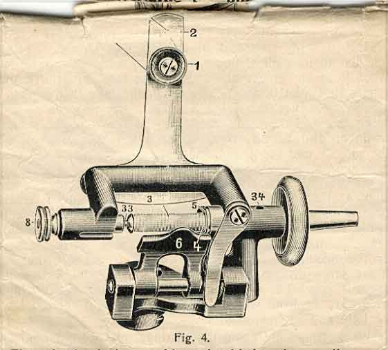

The wheel of the machine should be always disconnected before starting to wind, which is done by pushing the catch on the boss of the wheel from you, which not only makes it much easier to fill the bobbin but saves a lot in the wear of the machine.
To wind the cotton on to the bobbin first place the reel on pin drawing the cotton between the discs (1, Figure 4), then through slot (2) bringing it down behind the winder and out through opening under Nr. 3.
Now hold the bobbin between the thumb and finger of the hand and pass the end of the cotton through the hole at the end, taking care to let the cotton enter from the inside, when done place the bobbin in its position by pulling out spring (8) but the end threaded must be placed in the recess at the right with the small pin in the hole though which the cotton is threaded. Before starting to wind press No. 6, towards the bobbin and the rubber ring against the large wheel taking care that the cotton is tight from the reel before starting. As soon as the bobbin is properly filled it stops automatically.
To remove the bobbin draw back No. 6 and 8.